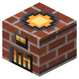

Crucible Furnace


Bronze, babbitt — any fire; monel, invar, cupronickel, silicon, electric steel, optical glass, insulator, slag wool — coke only.
Charge into the load (4 slots), fuel into the firebox. On any fire — bronze (3 copper + 1 tin) and babbitt (8 tin + 1 copper). On coke (hot fire) — everything the TE induction smelter used to make: monel (2 nickel + 1 copper), invar (2 iron + 1 nickel; ingots or dust), cupronickel steel (4 steel + 1 monel), silicon (2 sand + coke), electric steel (4 iron + silicon), optical glass (2 flint + lead dust or 2 sand + potash), porcelain insulator (2 clay + calcined flint), slag wool (2 slag). On coal these recipes stall: "coke needed". The recipe is picked by the contents: an extra ingredient means nothing melts.
Parameters
| Era | 1 — Farm |
|---|---|
| Multiblock | no |
| Drive | own firebox |
| What it does | 1:1 alloys: bronze, babbitt on any fire; on coke — monel, invar, cupronickel, silicon, electric steel, optical glass, insulator, slag wool (the former TE smelter); no firewood |
| Input energy | fire (200 t per ingot) |
| Output | ash |
| Made of | RC coke oven brick, brick, furnace, terracotta, grate |
Fed by
- minecraft:flint ← Stamp Mill
- dustCopper ← Chemical Reactor, High-Pressure Reactor
Feeds
- ingotInvar → Design Bureau
- Slag Wool → Design Bureau